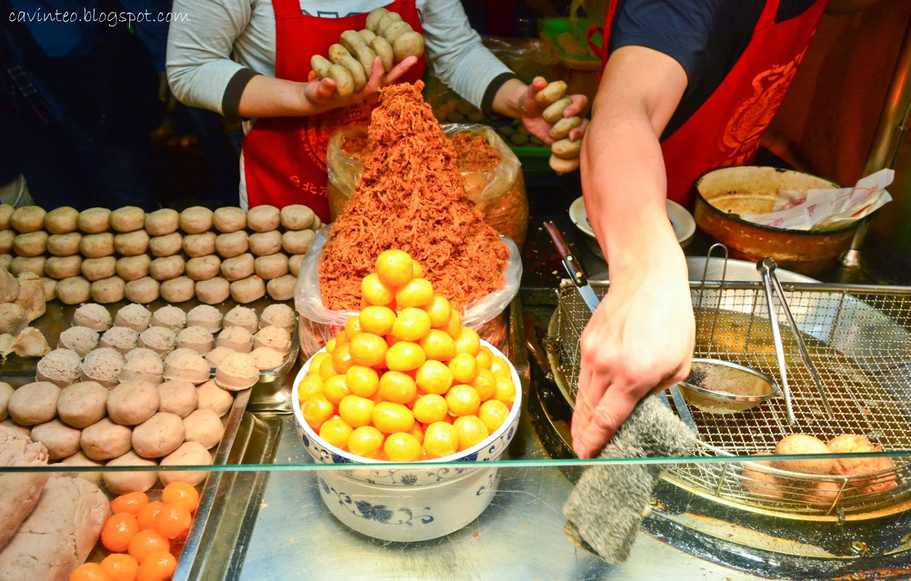

Taiwan is located off the coast of southwest of Okinawa, Japan and north of the Philippines.The island has been governed by the Republic of China (ROC) since 1945. Shaped roughly like a sweet potato, the island nation has more than 23 million people and is one of the most densely populated places in the world. Besides its crowded cities, Taiwan is also known for steep mountains and lush forests.
Made from heavily fermented tofu, it is served in a variety of ways: fried with pickled cabbage on the side or boiled with chili peppers.
The taro is shaped into a hollow ball, stuffed with pork floss (dried pork) and egg yolk before being deep-fried in vats of oil.
